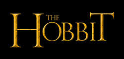

LA SINOPSIS DE ‘EL HOBBIT: UN VIAJE INESPERADO’
La aventura sigue el viaje de Bilbo Bolsón, que se embarca en una épica búsqueda para recuperar el tesoro y el reino enano de Erebor tras ser arrebatados por el terrible dragón Smaug. Alcanzado de repente por el mago Gandalf el Gris, Bilbo se encuentra acompañado de 13 enanos dirigidos por el legendario guerrero Thorin escudo de roble. Su viaje les hace adentrarse en el bosque y cruzar tierras peligrosas, donde se encuentran con trasgos, orcos, arañas gigantes y hechiceros, entre otros. Aunque su objetivo es la Montaña Solitaria de Oriente, primero deben escapar de los túneles de los trasgos, donde Bilbo se encuentra con la criatura que va a cambiar su vida para siempre: Gollum.
DIRIGIDA
“No hay en el planeta un ser humano más cualificado para dirigir estas películas“. Así anunciaba el directivo Alan Horn (expresidente de Warner Bros., ahora jefe de Walt Disney Studios) el regreso de Peter Jackson al rico universo de Tolkien para dirigir la adaptación de ‘El hobbit’, un libro de apenas 300 páginas que llegará a los cines convertido en una lujosa trilogía destinada a arrasar en taquilla. Nacido en Pukerua Bay, Nueva Zelanda, en 1961, Jackson cuenta que quiso dirigir desde que vio ‘King Kong’ (1933), de la que haría un remake en 2005, ya convertido en uno de los cineastas más famosos —y sobrevalorados— del planeta. Tras sus últimas películas, resulta sorprendente que comenzara su carrera con títulos como ‘Mal gusto’ (‘Bad Taste’, 1987), ‘El delirante mundo de los Feebles’ (‘Meet the Feebles’, 1989) y ‘Braindead: tu madre se ha comido a mi perro’ (‘Braindead’, 1992), disfrutables gamberradas de bajo presupuesto plagadas de humor y sangre. Dio un giro a su carrera con la dramática y cautivadora ‘Criaturas celestiales’ (‘Heavenly Creatures’, 1994), antes de volver a la comedia de terror con la reivindicable ‘Agárrame esos fantasmas’ (‘The Frighteners’, 1996). Luego llegó la hora de su mayor reto, la odisea de trasladar a la gran pantalla la trilogía del anillo de Tolkien, lo que le proporcionó el Oscar a la mejor dirección por la tercera entrega, ‘El retorno del rey’, la más irregular pero también la más emocionante de la trilogía —también se llevaría la estatuilla —. Después de su fallida versión de ‘King Kong’, llegó otro fiasco, la adaptación de ‘The Lovely Bones’ (2009). Al margen de otras consideraciones, está claro que Jackson necesitaba volver a Tolkien.
ESCRITOR
El hobbit (título original en inglés: The Hobbit, or There and Back Again, usualmente abreviado como The Hobbit) es una novela fantástica del filólogo y escritor británico J. R. R. Tolkien. Fue escrita por partes desde finales de los años 1920 hasta principios de los años 1930 y, en un principio, tan solo tenía el objetivo de divertir a los hijos pequeños de Tolkien.1 No obstante, el manuscrito de la obra aún sin acabar fue prestado por el escritor a varias personas y finalmente acabó en manos de la editorial George Allen & Unwin. Dispuestos a publicarla, los editores pidieron a Tolkien que finalizara la obra y El hobbit fue publicada el 21 de septiembre de 1937 en el Reino Unido. Es la primera obra que explora el universo mitológico creado por Tolkien y que más tarde se encargarían de definir El Señor de los Anillos y El Silmarillion. Dentro de dicha ficción, el argumento de El hobbit se sitúa en el año 2941 de la Tercera Edad del Sol,2 y narra la historia del hobbit Bilbo Bolsón, que junto con el mago Gandalf y un grupo de enanos, vive una aventura en busca del tesoro custodiado por el dragón Smaug en la Montaña Solitaria.
PRODUCIDA
Tras muchos retrasos, accidentes, y multitud de problemas, ¡por fin! ha comenzado en Wellington, Nueva Zelanda, la producción de “El Hobbit”, la adaptación al cine en dos largometrajes de Peter Jackson de la celebérrima obra maestra de J.R.R. Tolkien. “El Hobbit” está ambientada en la Tierra Media 60 años antes de “El señor de los anillos”, también de Tolkien, y que Jackson y su equipo llevó a la gran pantalla en la exitosa trilogía que culminó con la oscarizada “El señor de los anillos: El retorno del rey”. Martin Freeman protagoniza la cinta en el papel de Bilbo Baggins y Ian McKellen vuelve a dar vida a Gandalf el Gris. Los enanos son interpretados por Richard Armitage (Thorin Oakenshield), Ken Stott (Balin), Graham McTavish (Dwalin), William Kircher (Bifur) James Nesbitt (Bofur), Stephen Hunter (Bombur), Rob Kazinsky (Fili), Aidan Turner (Kili), Peter Hambleton (Gloin), John Callen (Oin), Jed Brophy (Nori), Mark Hadlow (Dori) y Adam Brown (Ori). De nuevo en los papeles que ya encararon en la trilogía de “El señor de los anillos” encontramos a Cate Blanchett como Galadriel, Andy Serkis en el papel de Gollum e Elijah Wood como Frodo. Jeffrey Thomas y Mike Mizrahi también forman parte del reparto y dan vida a los reyes de los Enanos Thror y Thrain, respectivamente. Además, se esperan más anuncios acerca de los miembros del elenco. ‘El Hobbit’ está siendo producida por Peter Jackson y Fran Walsh, junto a Carolynne Cunningham. Sus productores ejecutivos son Ken Kamins y Zane Weiner, con Philippa Boyens como co-productora. La oscarizada trilogía de “El señor de los anillos”, que tan buenas críticas cosechó además, también del equipo de producción de Jackson y Walsh, recaudó casi 3.000 millones de dólares en taquilla. En 2003, “El retorno del rey” barrió en la ceremonia de los Oscar, haciéndose con las estatuillas en las 11 categorías para las que había sido nominada, incluida la de Mejor película, algo totalmente inédito en el caso de una película de fantasía. La producción de la trilogía también sentó un precedente en su momento. En el equipo creativo de Jackson también hay otros nombres que repiten como el del director de fotografía Andrew Lesnie, el diseñador de producción Dan Hennah, los diseñadores conceptuales Alan Lee y John Howe, el compositor Howard Shore y el diseñador de maquillaje y peluquería Peter King. El vestuario ha sido diseñado por Ann Maskrey y Richard Taylor. Taylor se encarga también de supervisar el diseño y la producción de las armas, las armaduras y las prótesis que, de nuevo, corren a cargo del galardonado Weta Workshop. Weta Digital estará al frente de los efectos visuales de las dos entregas, bajo la dirección del supervisor de efectos visuales Joe Letteri. La postproducción se realizará en Park Road Post Production, en Wellington. Las películas de ‘El Hobbit’ están siendo co-producidas por New Line Cinema y MGM, con la producción ejecutiva de New Line. Warner Bros Pictures se encargará de su distribución en cines en todo el mundo, aunque MGM gestionará algunos territorios selectos así como de las licencias internacionales para televisión MGM. El estreno de ambos films está previsto para finales de 2012 y 2013, respectivamente. “El Hobbit” está ambientada en la Tierra Media 60 años antes de “El señor de los anillos”, también de Tolkien, y que Jackson y su equipo llevó a la gran pantalla en la exitosa trilogía que culminó con la oscarizada “El señor de los anillos: El retorno del rey”.
CALIFICACION
Duración: 169 min. Calificación por edades: No recomendada para menores de 16 años. Nuestro compañero @JohnStallone nos informa que la MPAA (Motion Picture Association of America) ya ha calificado La Desolación de Smaug, a la que le ha otorgado una calificación de PG13, la misma que el resto de las películas de la Tierra Media. Aunque hay una pequeña, pero significativa diferencia. Mientras que La Comunidad del Anillo, Las Dos Torres y Un Viaje Inesperado obtuvieron esta calificación por contener “imágenes que dan miedo (scary images)”, El Retorno del Rey y La Desolación de Smaug la han obtenido por tener “imágenes aterradoras (frightening images)”, lo que significa que la segunda película de El Hobbit será más oscura, tal y como nos había prometido Peter Jackson. Y a todo esto, ¿qué significa la calificación PG13? Según la web de la MPAA, es un aviso para que los padres sean especialmente cuidadosos ya que parte del material podría ser inapropiado para menores de 13 años.
GENERO
El hobbit es una novela fantástica del filólogo y escritor británico J. R. R. Tolkien. Fue escrita por partes desde finales de los años 1920 hasta principios de los años 1930 y, en un principio, tan solo tenía el objetivo de divertir a los hijos pequeños de Tolkien. Autor: J. R. R. Tolkien Páginas: 288 Traducido por: Manuel Figueroa Cuentos inconclusos: El hobbit Personajes: Bilbo Bolsón, Gandalf, Thorin, Gollum, Smaug, MÁS Géneros: Novela, Literatura infantil, Alta fantasía, Épico, Literatura fantástica.
FECHA DE ESTRENO
* 28 de noviembre de 2012 * 2 de diciembre de 2013 * 1 de diciembre de 2014